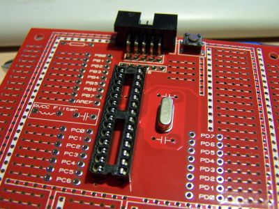
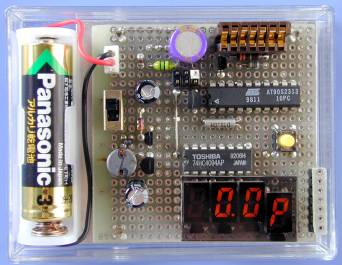
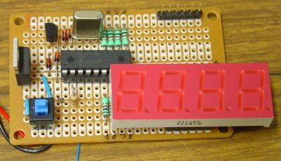
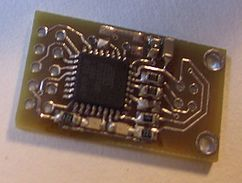
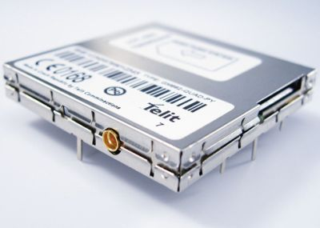
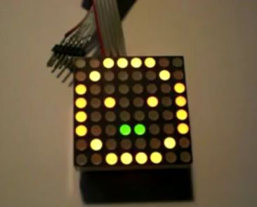

A weblog focused on interesting circuits, ideas, schematics and other information about microelectronics and microcontrollers.
E-books
Disclaimer
Because I have not tested all electronic circuits mentioned on this pages, I cannot attest to their accuracy; therefore, I do not provide a warranty of any kind and cannot be held responsible in any manner.
AVR prototype board
7. June 2009 - 14:25 — adminA new prototype board for AVR 28-pin microcontrollers from Protostack.

m64
7. June 2009 - 11:20 — adminA small computer, based on ATMega162, built by C64 lover Andre Klonz.

Digital capacitance meter
4. June 2009 - 17:53 — adminAn older (2003), but still good circuit: Capacitance meter with AVR AT90S2313 by ELM.

TellyMate - A Serial-to-TV adapter
3. June 2009 - 17:47 — adminTellyMate is a VT-52 compatible terminal display device that takes data from a RS-232 and outputs text to a TV screen, developed by guys from Batsocks.
PIC frequency counter
2. June 2009 - 21:02 — adminA small frequency counter with a cheap PIC microcontroller and a few seven-segment LED digits with frequency range up to 50MHz.

USB to Serial with ATUSB
2. June 2009 - 20:49 — adminBuild your own Benito - an USB to Serial device based on AT90USB162.

Interfacing Telit GM862 GPS module with an Arduino
25. May 2009 - 20:36 — adminTelit GM862 is a GPRS + GPS module with simple AT-based communication protocol. You can connect it to the Arduino in easy way.

QP/M
24. May 2009 - 18:18 — adminSomething nostalgic: QP/M is a time/date stamping and speedy CP/M 2.2 replacement that fits in the same memory space.
Blog @ Twitter
24. May 2009 - 18:00 — adminDo you use Twitter? If so, follow me. I'd like to use Twitter for quick linking to interesting pages I find.
HuBik - Tengu-like device
17. May 2009 - 20:18 — adminTengu-like device with 8x8 RG LED display.
